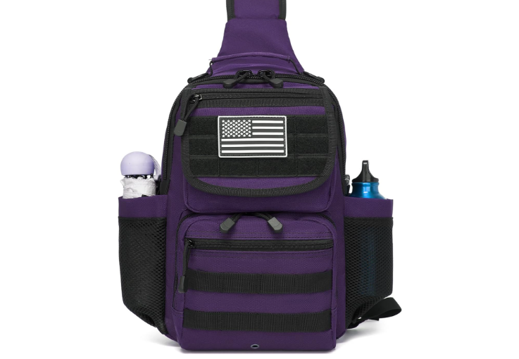
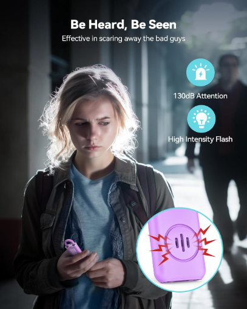
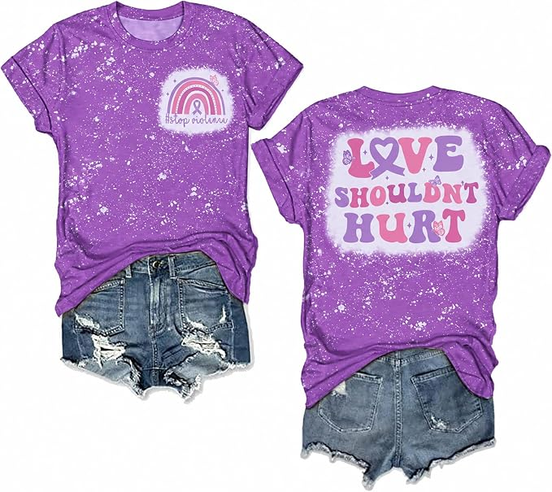
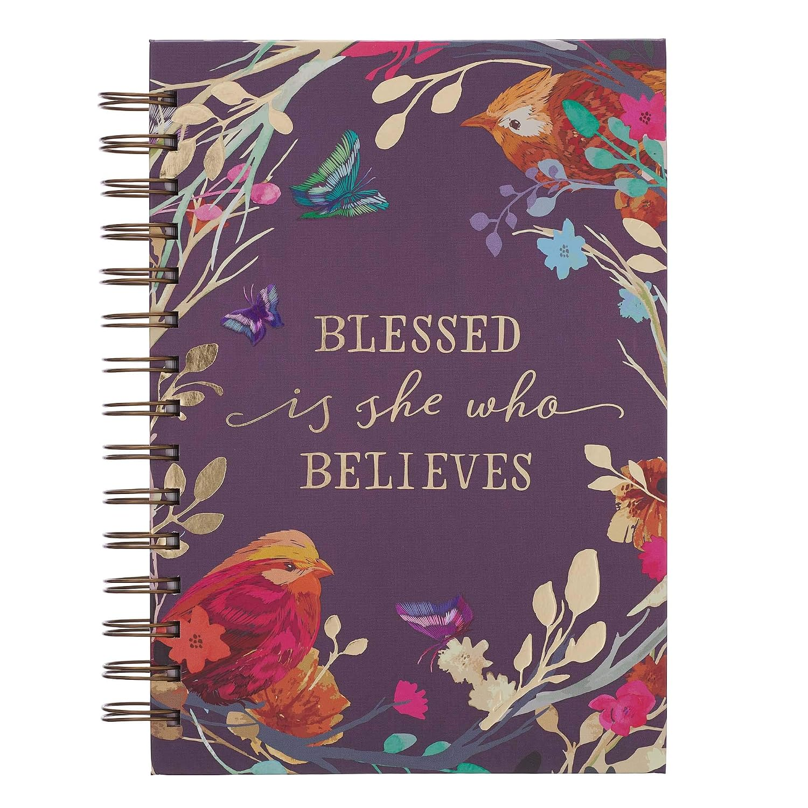

DAY
01
OCTOBER 1
Purple Tactical Sling Bag
A practical purple find to start the month with. Useful, everyday gear with a little personality.
View this find on Amazon →October
Domestic Violence Awareness Month
A month of awareness, reflection, and little reminders that no one deserves to live in fear.
Why I'm Doing This
I'm a survivor of domestic violence, and I know what it feels like to live through something that can make you feel small, isolated, and unseen.
I don't speak for every survivor, and I'm not here to call myself an expert. I'm simply using my own voice and this platform to bring a little light to a subject that can be incredibly dark.
And I'm speaking to women and men alike, because domestic violence can happen to anyone.
If sharing a little of my own story helps someone feel less alone, then it is worth saying out loud.
Small Finds. Big Meaning.
Each day throughout October, I'm sharing a purple find from Amazon. Some are practical. Some are just pretty. All of them give me another reason to keep purple visible this month.

OCTOBER 1
A practical purple find to start the month with. Useful, everyday gear with a little personality.
View this find on Amazon →
OCTOBER 2
A small safety-focused find designed to help attract attention when someone needs it.
View this find on Amazon →
OCTOBER 3
A purple reminder worth wearing: love should never require someone to accept being hurt, controlled, threatened, or afraid.
View this find on Amazon →
OCTOBER 4
Sometimes writing things down matters. Dates, conversations, incidents, questions, or things you simply don't want to forget. A private place to keep your thoughts and your own record of what happened.
If you're documenting an experience for yourself or preparing to talk with someone you trust, keeping your notes together can help you keep track of the details that matter to you.
View this find on Amazon →More purple finds are coming throughout October.
Day by day. Find by find.If This Month Is Personal For You
This page is here for awareness and conversation. If you or someone you know is experiencing domestic violence, please consider reaching out to a qualified support organization or someone you trust.
Some links on this page are affiliate links, which means I may earn a commission if you make a purchase through them at no additional cost to you.
As an Amazon Associate I earn from qualifying purchases.